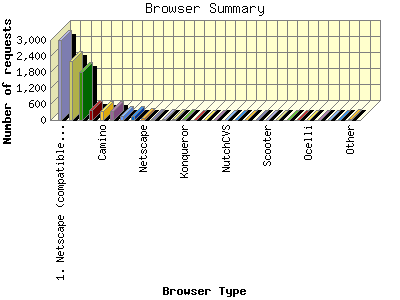
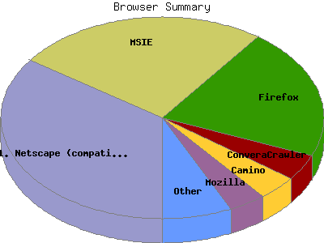

Report generated by Analog 6.0 and Report Magic 2.21
|
Web Server Statistics for "Harish Narayanan (hnarayan) - July 2006" Report generated by Analog 6.0 and Report Magic 2.21 |
The Browser Summary identifies the most popular web browsers used to visit
this site.
Browsers are broken down by recognized categories such as
Netscape Navigator/Communicator, Microsoft Internet Explorer, WebTV, Opera
and the like. Within each category is also a subgroup by version number
such as 'MSIE 5.0' or 'Netscape 4.5'.
This report shows all results. This report is sorted by number of requests.


| Browser Type | Number of requests | Number of bytes transferred | Percentage of the bytes | Percentage of the requests | |
|---|---|---|---|---|---|
| 1. | Netscape (compatible) | 2,991 | 74.853 MB | 20.62% | 34.63% |
| 2. | MSIE | 2,211 | 137.319 MB | 37.84% | 25.60% |
| MSIE/6 | 2,126 | 120.721 MB | 33.26% | 24.61% | |
| MSIE/5 | 33 | 3.026 MB | 0.83% | 0.38% | |
| MSIE/7 | 52 | 13.571 MB | 3.74% | 0.60% | |
| 3. | Firefox | 1,809 | 106.210 MB | 29.26% | 20.94% |
| Firefox/1 | 1,760 | 103.690 MB | 28.57% | 20.38% | |
| Firefox/0 | 47 | 2.505 MB | 0.69% | 0.54% | |
| Firefox/2 | 2 | 14.952 KB | 0.00% | 0.02% | |
| 4. | ConveraCrawler | 361 | 4.776 MB | 1.32% | 4.18% |
| ConveraCrawler/0 | 361 | 4.776 MB | 1.32% | 4.18% | |
| 5. | Camino | 339 | 8.391 MB | 2.31% | 3.92% |
| Camino/1 | 339 | 8.391 MB | 2.31% | 3.92% | |
| 6. | Mozilla | 324 | 6.563 MB | 1.81% | 3.75% |
| Mozilla/1 | 196 | 5.104 MB | 1.41% | 2.27% | |
| 7. | msnbot | 144 | 9.358 MB | 2.58% | 1.67% |
| msnbot/1 | 85 | 2.896 MB | 0.80% | 0.98% | |
| msnbot/0 | 59 | 6.462 MB | 1.78% | 0.68% | |
| 8. | Safari | 135 | 6.713 MB | 1.85% | 1.56% |
| Safari/419 | 65 | 3.389 MB | 0.93% | 0.75% | |
| Safari/417 | 50 | 2.466 MB | 0.68% | 0.58% | |
| Safari/312 | 20 | 877.378 KB | 0.24% | 0.23% | |
| 9. | Netscape | 67 | 1.322 MB | 0.36% | 0.78% |
| Netscape/7 | 37 | 587.728 KB | 0.16% | 0.43% | |
| Netscape/8 | 30 | 765.513 KB | 0.21% | 0.35% | |
| 10. | Jyxobot | 45 | 1.126 MB | 0.31% | 0.52% |
| Jyxobot/1 | 45 | 1.126 MB | 0.31% | 0.52% | |
| 11. | psbot | 37 | 364.357 KB | 0.10% | 0.43% |
| psbot/0 | 37 | 364.357 KB | 0.10% | 0.43% | |
| 12. | Opera | 36 | 1.593 MB | 0.44% | 0.42% |
| Opera/9 | 15 | 124.820 KB | 0.03% | 0.17% | |
| Opera/7 | 21 | 1.471 MB | 0.41% | 0.24% | |
| 13. | Konqueror | 29 | 410.735 KB | 0.11% | 0.34% |
| Konqueror/3 | 29 | 410.735 KB | 0.11% | 0.34% | |
| 14. | Galeon | 18 | 547.466 KB | 0.15% | 0.21% |
| Galeon/2 | 18 | 547.466 KB | 0.15% | 0.21% | |
| 15. | webcollage | 10 | 387.922 KB | 0.10% | 0.12% |
| webcollage/1 | 10 | 387.922 KB | 0.10% | 0.12% | |
| 16. | W3C_Validator | 9 | 46.521 KB | 0.01% | 0.10% |
| W3C_Validator/1 | 9 | 46.521 KB | 0.01% | 0.10% | |
| 17. | NutchCVS | 9 | 84.602 KB | 0.02% | 0.10% |
| NutchCVS/0 | 9 | 84.602 KB | 0.02% | 0.10% | |
| 18. | Exabot | 8 | 50.891 KB | 0.01% | 0.09% |
| Exabot/2 | 8 | 50.891 KB | 0.01% | 0.09% | |
| 19. | DataFountains | 5 | 9.102 KB | 0.00% | 0.06% |
| DataFountains/DMOZ | 5 | 9.102 KB | 0.00% | 0.06% | |
| 20. | DeadLinkCheck | 4 | 0.000 B | 0.00% | 0.05% |
| DeadLinkCheck/0 | 4 | 0.000 B | 0.00% | 0.05% | |
| 21. | Scooter | 4 | 25.146 KB | 0.01% | 0.05% |
| Scooter/3 | 4 | 25.146 KB | 0.01% | 0.05% | |
| 22. | PageBitesHyperBot | 3 | 20.212 KB | 0.01% | 0.04% |
| PageBitesHyperBot/600 | 3 | 20.212 KB | 0.01% | 0.04% | |
| 23. | NG | 3 | 2.106 MB | 0.58% | 0.04% |
| 24. | Yahoo-MMCrawler | 3 | 0.000 B | 0.00% | 0.04% |
| 25. | Ocelli | 3 | 63.526 KB | 0.02% | 0.04% |
| Ocelli/1 | 3 | 63.526 KB | 0.02% | 0.04% | |
| 26. | NSPlayer | 2 | 57.964 KB | 0.02% | 0.02% |
| 27. | Gigabot | 2 | 20.688 KB | 0.01% | 0.02% |
| Gigabot/2 | 2 | 20.688 KB | 0.01% | 0.02% | |
| 28. | Krugle | 2 | 10.287 KB | 0.00% | 0.02% |
| Krugle/Krugle,Nutch/0 | 2 | 10.287 KB | 0.00% | 0.02% | |
| 29. | Szukacz | 2 | 7.001 KB | 0.00% | 0.02% |
| Szukacz/1 | 2 | 7.001 KB | 0.00% | 0.02% | |
| 30. | Windows-Media-Player | 2 | 33.499 KB | 0.01% | 0.02% |
| 31. | zedzo.digest | 2 | 1.832 KB | 0.00% | 0.02% |
| zedzo.digest/0 | 2 | 1.832 KB | 0.00% | 0.02% | |
| 32. | HTTP | 1 | 1.832 KB | 0.00% | 0.01% |
| HTTP/1 | 1 | 1.832 KB | 0.00% | 0.01% | |
| 33. | RPT-HTTPClient | 1 | 445.092 KB | 0.12% | 0.01% |
| 34. | nicebot | 1 | 1.832 KB | 0.00% | 0.01% |
| 35. | NetResearchServer | 1 | 1.820 KB | 0.00% | 0.01% |
| NetResearchServer/4 | 1 | 1.820 KB | 0.00% | 0.01% | |
| 36. | Crawler | 1 | 1.832 KB | 0.00% | 0.01% |
| Crawler/1 | 1 | 1.832 KB | 0.00% | 0.01% | |
| 37. | wfpatwslstlpfgdhnsrM | 1 | 8.659 KB | 0.00% | 0.01% |
| 38. | NG-Search | 1 | 1.820 KB | 0.00% | 0.01% |
| NG-Search/0 | 1 | 1.820 KB | 0.00% | 0.01% | |
| 39. | ia_archiver | 1 | 5.144 KB | 0.00% | 0.01% |
| 40. | wbnhpbcyrJtgfmJxpxty | 1 | 10.203 KB | 0.00% | 0.01% |
| 41. | MJ12bot | 1 | 1.820 KB | 0.00% | 0.01% |
| MJ12bot/v1 | 1 | 1.820 KB | 0.00% | 0.01% | |
| 42. | Gaisbot | 1 | 1.820 KB | 0.00% | 0.01% |
| Gaisbot/3 | 1 | 1.820 KB | 0.00% | 0.01% | |
| 43. | Lynx | 1 | 6.481 KB | 0.00% | 0.01% |
| Lynx/2 | 1 | 6.481 KB | 0.00% | 0.01% | |
| 44. | guflgigphbqyLphivloivurrxpqbjLdx | 1 | 8.659 KB | 0.00% | 0.01% |
| 45. | ksm8uoepgnopgfbywfkyu u8hfeyo kkp p | 1 | 5.169 KB | 0.00% | 0.01% |
| 46. | ydjxanvptxvntSprjjhh3ae3ihupvcpt | 1 | 8.659 KB | 0.00% | 0.01% |
| 47. | ijuLugLhihnjeueciubwr unjcmjmuhh | 1 | 8.659 KB | 0.00% | 0.01% |
| 48. | CFNetwork | 1 | 10.705 KB | 0.00% | 0.01% |
| CFNetwork/129 | 1 | 10.705 KB | 0.00% | 0.01% | |
| 49. | Mediapartners-Google | 1 | 5.169 KB | 0.00% | 0.01% |
| Mediapartners-Google/2 | 1 | 5.169 KB | 0.00% | 0.01% | |
| 50. | sna-0.0.1 mikeelliott@hotmail.com | 1 | 1.820 KB | 0.00% | 0.01% |
This report was generated on September 9, 2006 16:01.
Report time frame July 1, 2006 00:30 to July 31, 2006 21:33.
| Web statistics report produced by: | |
 Analog 6.0 Analog 6.0 |  Report Magic 2.21 Report Magic 2.21 |